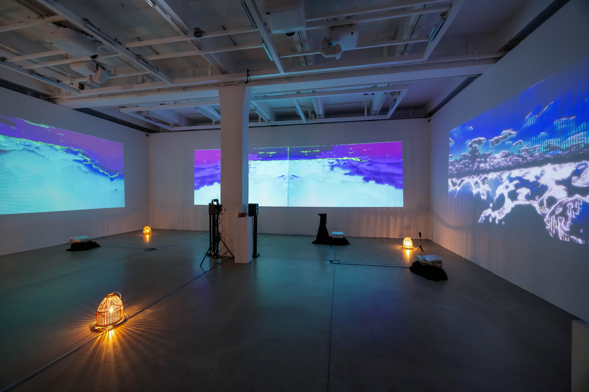
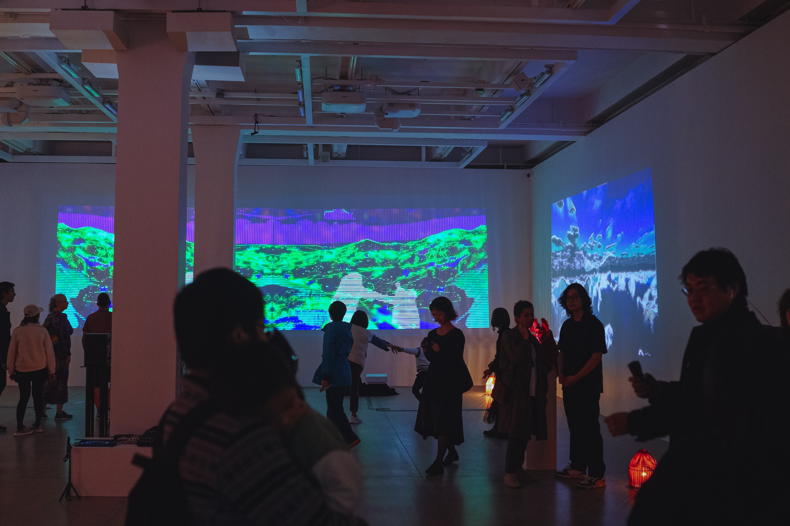
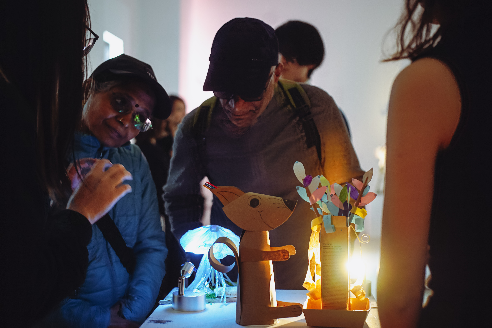
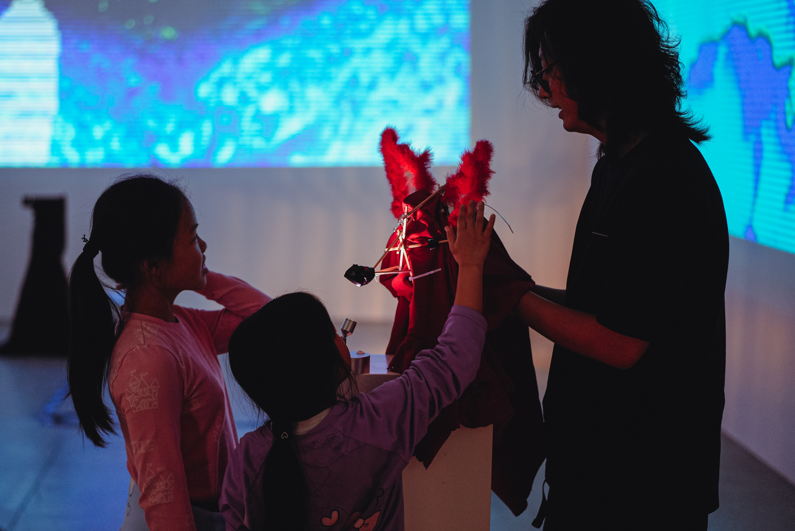
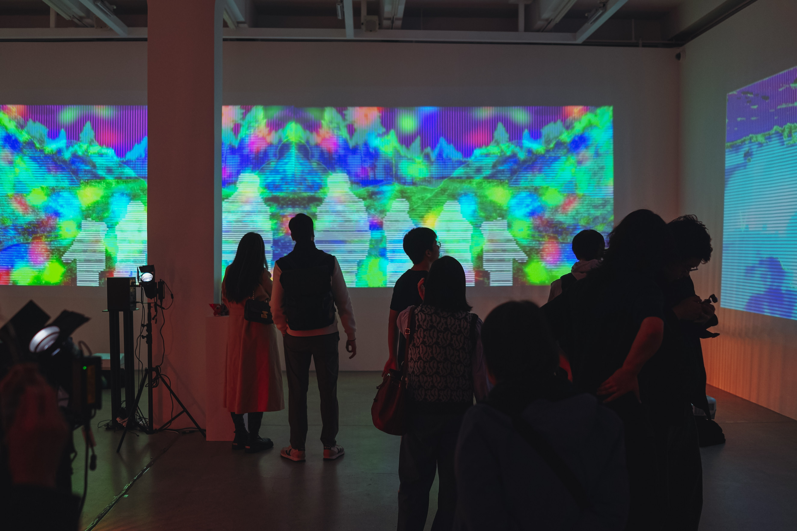
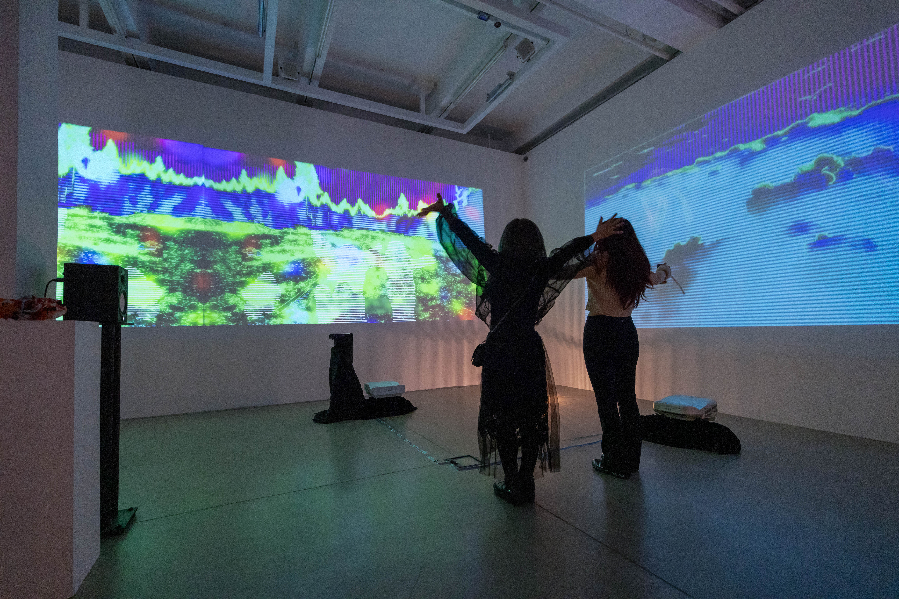
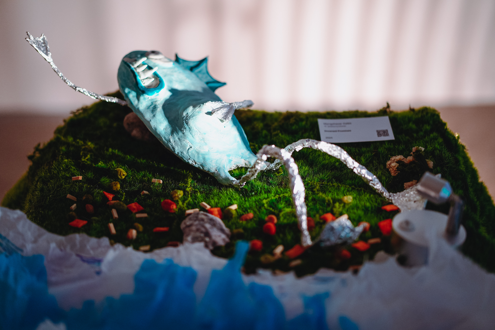
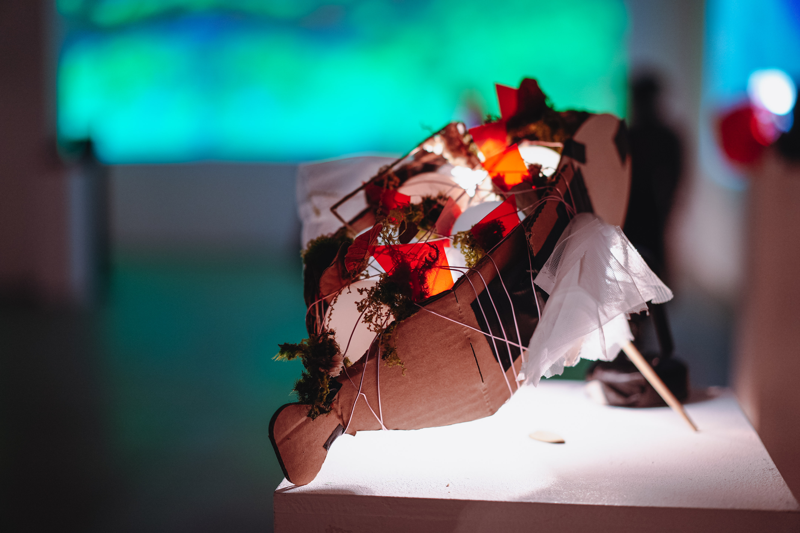
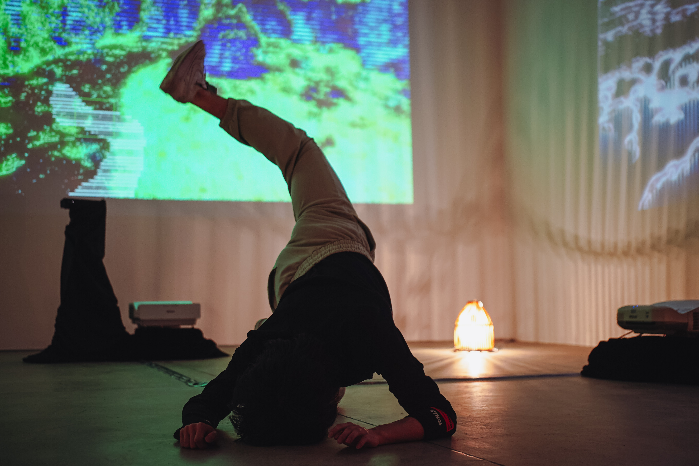
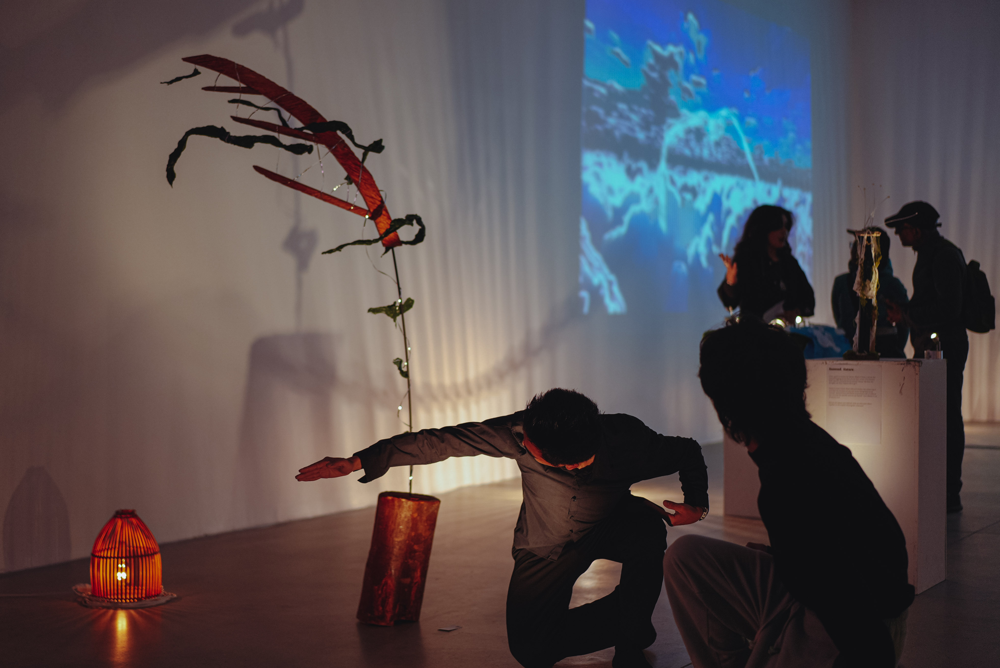

Nonhumotion
Exhibition
2025/03
Tai Kwun F Hall, Central, Hong Kong
This project uses speculative design strategies to immerse artists in an alternative future of climate change, and ask them to design movements, engagements, and artifacts that show this future from a non-human perspective to visitors to Taikwun. Selected artists will be given workshops to learn movement, animation, artifact construction strategies from leading professors at BU, PolyU, APA, and CityU. Taking the perspectives of non-humans in a future of climate change, they will then ideate, design, and create a movement and artifact-based engagement for visitors to Taikwun on 9 March 2025.
Art Director: RAY LC
Curator: LIU Sijia Star
Producer: Zoe Chan
Main Visual Artist: Paul Shepherd
Sound Artists: Kat Austen(Music Composer), Ian Tang
Light Designer: LCM
Interactive Artist: Jay Chen
Facilitator: Bowen Liu (Technical Support), Lareina Li
Researcher: Clee Zhuo Wang
Participating Artists: Alex Bai, Dales Myngzhasar, Chow Cheuk Lam Sunessa, Jiayu Liu, Ng Sek Hin Jerry, Runqi Zhou, Ying Nan Shi, Yining Liao, Lin Wang, and Mick Wong
Supported by:
HKADC, StudioForNarrativeSpaces, Epson, IAE , Picture Rhythm Studios, Soundlab
Exhibition Website: Exhibition website










